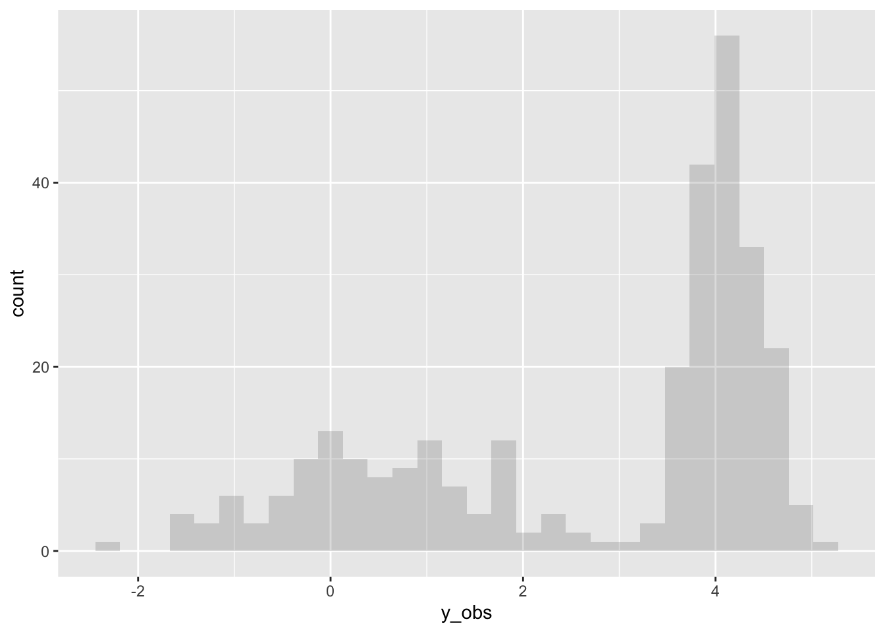
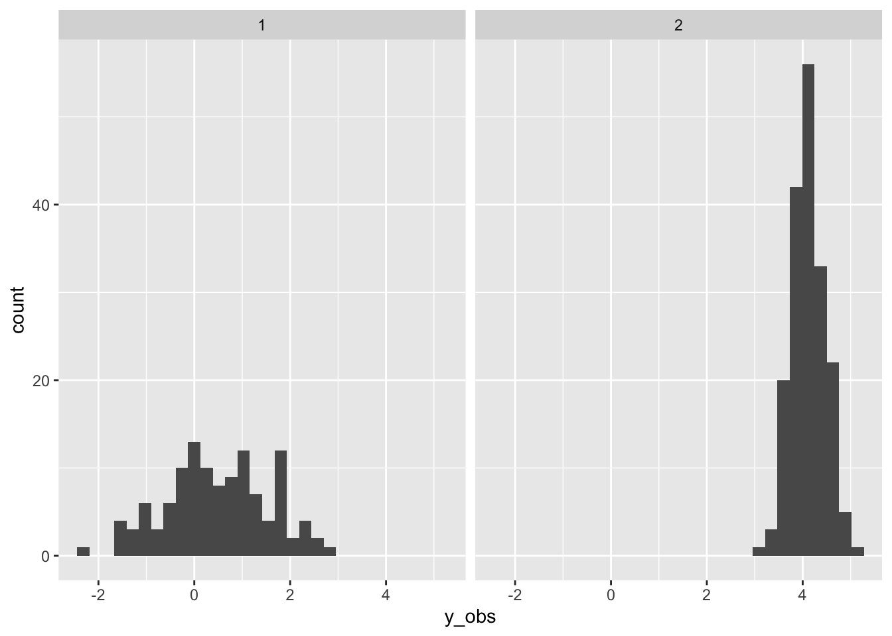
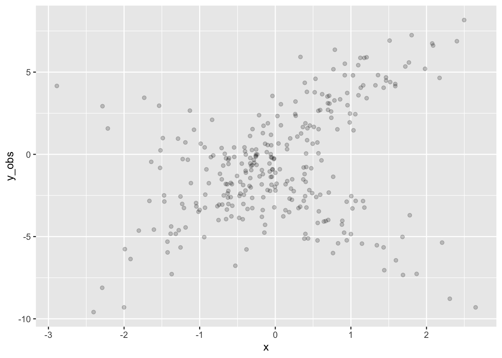
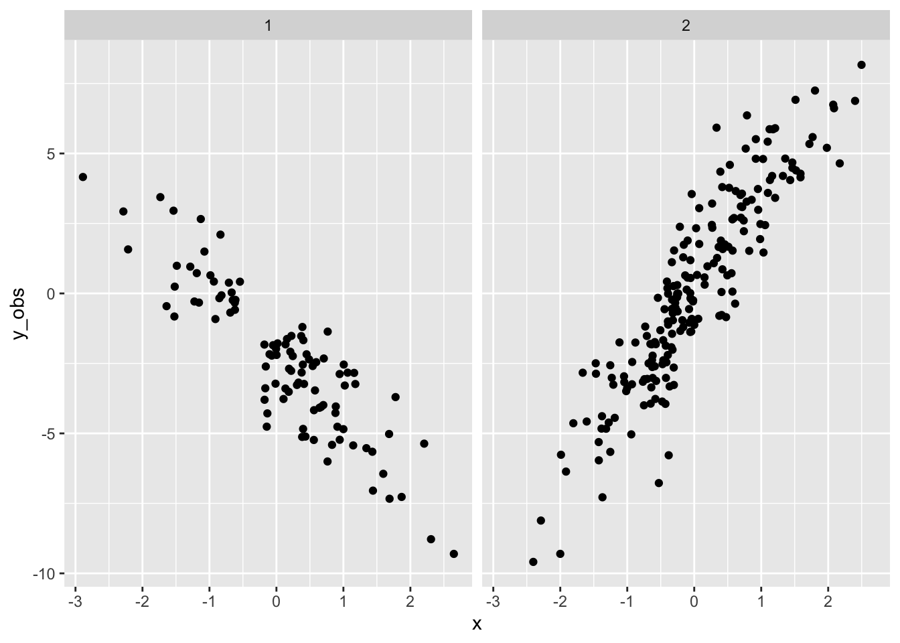
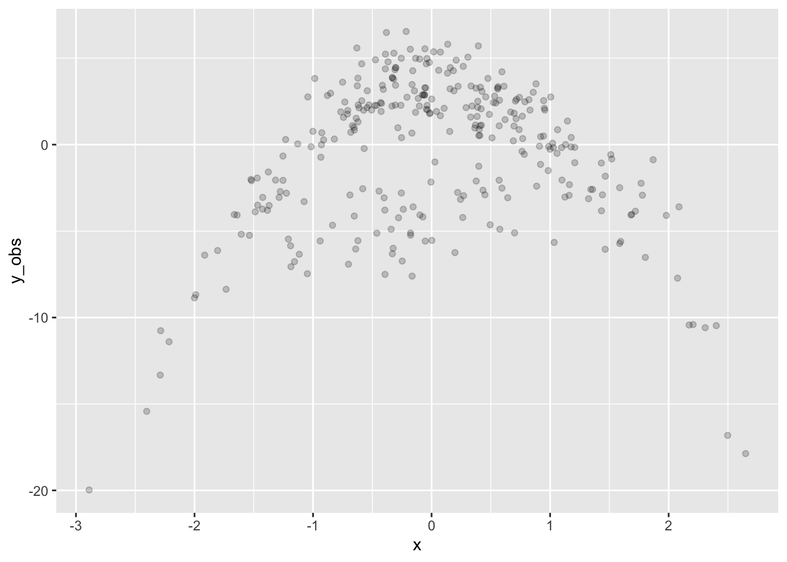
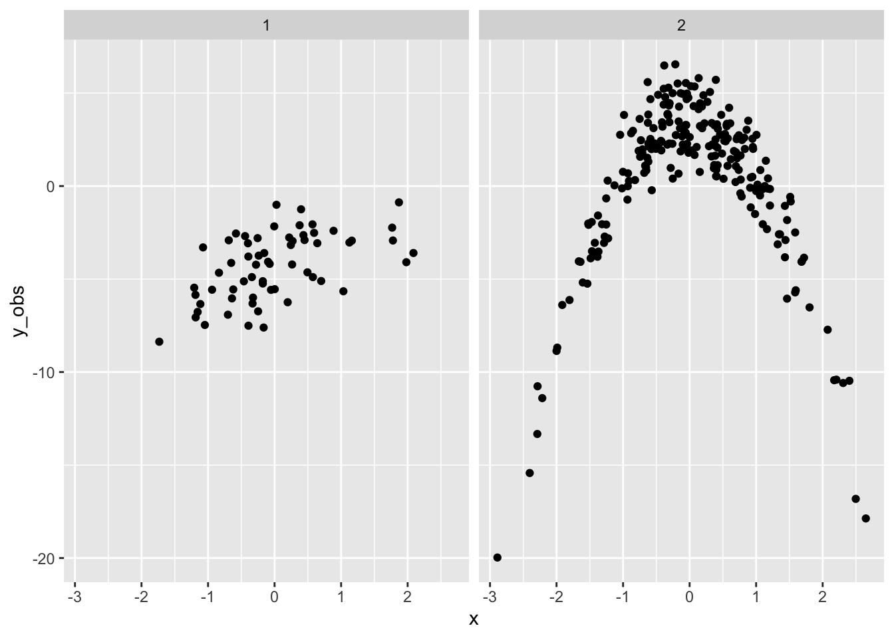

I couldn’t find much on the interblogs on finite mixture modelling using brms so I’ve provided this document to offer some practical code to help develop and apply a mixture model as a starting point.
From Wikipedia:
In statistics, a mixture model is a probabilistic model for representing the presence of subpopulations within an overall population, without requiring that an observed data set should identify the sub-population to which an individual observation belongs. Formally a mixture model corresponds to the mixture distribution that represents the probability distribution of observations in the overall population. However, while problems associated with “mixture distributions” relate to deriving the properties of the overall population from those of the sub-populations, “mixture models” are used to make statistical inferences about the properties of the sub-populations given only observations on the pooled population, without sub-population identity information.
Worked examples of finite mixture models in brms from Paul Burkner: http://paul-buerkner.github.io/brms/reference/mixture.html
Mixture models may be used directly for modeling data with multimodal distributions, or they may be used as priors for other parameters. For example a multilevel mixture model:
brm(y ~ x + z + (1 | g), family = mixture(gaussian, gaussian))
Or a growth mixture model:
brm(y ~ time + z + (1 + time | g), family = mixture(gaussian, gaussian))
https://m-clark.github.io/mixed-models-with-R/bayesian.html#beyond-the-model
Note: See the brms formula help for details on the mixture model specification
http://paul-buerkner.github.io/brms/reference/brmsformula.html
Finite mixture models are usually latent categorical variables, which are made possible in Stan by marginalizing out the discrete parameters (e.g., cluster membership). The cluster membership can then be recovered in the generated quantities block, as described next. (https://mc-stan.org/docs/2_18/stan-users-guide/mixture-modeling-chapter.html)
The posterior p(z) over the mixture indicator (z ∈ 1:K) is often of
interest as p(z = k) is the posterior probability that that observation
y was generated by mixture component k. The posterior can be computed
via Bayes’s rule. The normalization can be done via summation, because z
∈ 1:K only takes on finitely many values.
(https://mc-stan.org/docs/2_18/stan-users-guide/summing-out-the-responsibility-parameter.html)
The generated quantities block may be used to draw discrete parameter
values using the built-in pseudo-random number generators. For example
see categorical_logit_rng() in the section titled Discrete
Sampling:
https://mc-stan.org/docs/2_18/stan-users-guide/change-point-section.html
Simulation involves specifying the model in brms and then sampling from the priors to draw a single dataset.
Below we specify a simple mixture model with two Gaussian
distributions in brms, via the prior specification. The
parameters mu1 and mu2, and
sigma1 and sigma2, are the means and standard
deviations of each distribution respectively. The location of each
distribution needs to be different for identification purposes,
otherwise any single observation will be exchangable between any of the
distributions and the model will not fit.
theta is the mixing proportion, representing the
relative size of each distribution.
# brms requires a dataset even though it will not be used to sample from the
# priors
set.seed(1) # for replicability
d <- tibble(
y = c(rnorm(200), rnorm(100, 6)) # mu1 = N(0,1), mu2 = N(6,1), theta = 0.66
)
# Specify the mixture model for brms
mix <- mixture(gaussian, gaussian)
# Specify the parameters of the Gaussians, as well as theta
priors <- get_prior(formula = bf(y ~ 1),
data = d,
family = mix)
priors$prior[1] <- set_prior("constant(1)", class = "sigma1")
priors$prior[2] <- set_prior("gamma(1, 3)", class = "sigma2")
priors$prior[3] <- set_prior("dirichlet(0.66, 0.33)", class = "theta")
priors$prior[4] <- set_prior("normal(0, 1)", class="Intercept", dpar = "mu1")
priors$prior[5] <- set_prior("normal(5, 1)", class="Intercept", dpar = "mu2")After specifying the priors (i.e., parameters), we build (fit) the
model using sample_prior = "only".
mix.1 <- brm(formula = bf(y ~ 1),
data = d,
family = mix,
prior = priors,
sample_prior = "only",
seed = 1,
file = "mixtures_mix1.rds") ## Family: mixture(gaussian, gaussian)
## Links: mu1 = identity; sigma1 = identity; mu2 = identity; sigma2 = identity; theta1 = identity; theta2 = identity
## Formula: y ~ 1
## Data: d (Number of observations: 300)
## Draws: 4 chains, each with iter = 2000; warmup = 1000; thin = 1;
## total post-warmup draws = 4000
##
## Regression Coefficients:
## Estimate Est.Error l-95% CI u-95% CI Rhat Bulk_ESS Tail_ESS
## mu1_Intercept -0.03 0.98 -1.89 1.77 1.00 2428 2595
## mu2_Intercept 5.03 1.01 3.06 7.05 1.00 4232 2899
##
## Further Distributional Parameters:
## Estimate Est.Error l-95% CI u-95% CI Rhat Bulk_ESS Tail_ESS
## sigma1 1.00 0.00 1.00 1.00 NA NA NA
## sigma2 0.33 0.33 0.01 1.18 1.00 2342 1877
## theta1 0.67 0.33 0.01 1.00 1.00 2488 1368
## theta2 0.33 0.33 0.00 0.99 1.00 2488 1368
##
## Draws were sampled using sampling(NUTS). For each parameter, Bulk_ESS
## and Tail_ESS are effective sample size measures, and Rhat is the potential
## scale reduction factor on split chains (at convergence, Rhat = 1).After specifying and building the model we can draw a single dataset
from it to create simulated data using
posterior_predict.
set.seed(5) # for replicability
# Simulate data from the parameterized model
sim_data <- d %>%
mutate(
y_obs = c(t(posterior_predict(mix.1, nsamples = 1)))
)
Finally we can fit a mixture model to the simulated data. Note this fit has much wider priors than the original specification.
sim.1 <- brm(bf(y_obs ~ 1),
sim_data,
family = mix,
prior = c(
prior(normal(0, 7), Intercept, dpar = mu1),
prior(normal(5, 7), Intercept, dpar = mu2)),
init=0,
seed=1,
file = "mixtures_sim1.rds") ## Family: mixture(gaussian, gaussian)
## Links: mu1 = identity; sigma1 = identity; mu2 = identity; sigma2 = identity; theta1 = identity; theta2 = identity
## Formula: y_obs ~ 1
## Data: sim_data (Number of observations: 300)
## Draws: 4 chains, each with iter = 2000; warmup = 1000; thin = 1;
## total post-warmup draws = 4000
##
## Regression Coefficients:
## Estimate Est.Error l-95% CI u-95% CI Rhat Bulk_ESS Tail_ESS
## mu1_Intercept 0.51 0.11 0.30 0.74 1.00 2126 2102
## mu2_Intercept 4.13 0.03 4.07 4.18 1.00 4584 2771
##
## Further Distributional Parameters:
## Estimate Est.Error l-95% CI u-95% CI Rhat Bulk_ESS Tail_ESS
## sigma1 1.15 0.09 0.99 1.33 1.00 3009 2366
## sigma2 0.35 0.02 0.31 0.39 1.00 2922 2161
## theta1 0.40 0.03 0.34 0.45 1.00 3386 2479
## theta2 0.60 0.03 0.55 0.66 1.00 3386 2479
##
## Draws were sampled using sampling(NUTS). For each parameter, Bulk_ESS
## and Tail_ESS are effective sample size measures, and Rhat is the potential
## scale reduction factor on split chains (at convergence, Rhat = 1).The fit of the simulated data has recovered the original parameters
well. mu1 and sigma1 are close to 0 and 1
respectively. mu2 and sigma2 are close to 5
and 0.33 respectively. However the relative sizes of theta1
and theta2 are 0.4 and 0.6 respectively, which is the
reverse of the true model (0.66, 0.33).
From wikipedia: https://en.wikipedia.org/wiki/Probability_density_function
while the absolute likelihood for a continuous random variable to take on any particular value is 0 (since there is an infinite set of possible values to begin with), the value of the PDF at two different samples can be used to infer, in any particular draw of the random variable, how much more likely it is that the random variable would be close to one sample compared to the other sample.
Note that when x has the same density in both distributions, we need
the denominator in Bayes rule (i.e., theta) to correctly
adjust posterior probability!
# https://stats.stackexchange.com/questions/363046/probability-that-an-observation-comes-from-population-a-or-b
est = posterior_summary(sim.1)[, 'Estimate']
relative_p <- function(.y,
mu1=est[['b_mu1_Intercept']],
mu2=est[['b_mu2_Intercept']],
sigma1=est[['sigma1']],
sigma2=est[['sigma2']],
denom1=est[['theta1']],
denom2=est[['theta2']]) {
d1 <- dnorm(.y, mu1, sigma1) * denom1
d2 <- dnorm(.y, mu2, sigma2) * denom2
out = c(d1 / (d1 + d2),
d2 / (d1 + d2))
return(out)
}
p <- sim_data %>%
rowwise() %>%
mutate(
p_mu1 = relative_p(.y = y_obs)[1],
p_mu2 = relative_p(.y = y_obs)[2],
p_max = which.max(c(p_mu1, p_mu2))
) 
So far we have just modelled a mixture of intercepts, so adding a mixture of slopes is straightforward. However note that the slopes will not have different mixtures.
# add an x variable to the data (which is required but will not be used)
set.seed(1)
d <- d %>%
mutate(x = rnorm(300))
# Customise the priors we need to specify for an intercept + slope model
priors <- get_prior(bf(y ~ 1 + x),
d,
family = mix)
priors$prior[1] <- set_prior("constant(1.5)", class = "sigma1")
priors$prior[2] <- set_prior("constant(1.5)", class = "sigma2")
priors$prior[3] <- set_prior("dirichlet(1)", class = "theta")
priors$prior[4] <- set_prior("normal(-3, 1)", class="b", dpar = "mu1")
priors$prior[6] <- set_prior("normal(0, 3)", class="Intercept", dpar = "mu1")
priors$prior[7] <- set_prior("normal(3, 1)", class="b", dpar = "mu2")
priors$prior[9] <- set_prior("normal(0, 3)", class="Intercept", dpar = "mu2")
mix.2 <- brm(bf(y ~ x),
d,
family = mix,
prior = priors,
sample_prior = "only",
seed = 1,
file = "mixtures_mix2.rds"
)## Family: mixture(gaussian, gaussian)
## Links: mu1 = identity; sigma1 = identity; mu2 = identity; sigma2 = identity; theta1 = identity; theta2 = identity
## Formula: y ~ x
## Data: d (Number of observations: 300)
## Draws: 4 chains, each with iter = 2000; warmup = 1000; thin = 1;
## total post-warmup draws = 4000
##
## Regression Coefficients:
## Estimate Est.Error l-95% CI u-95% CI Rhat Bulk_ESS Tail_ESS
## mu1_Intercept -1.61 2.49 -6.65 3.09 1.00 2450 1954
## mu2_Intercept 1.56 2.49 -3.11 6.56 1.00 4942 3205
## mu1_x -3.03 0.96 -4.92 -1.18 1.00 3539 2352
## mu2_x 3.00 0.98 1.10 4.90 1.00 3717 2405
##
## Further Distributional Parameters:
## Estimate Est.Error l-95% CI u-95% CI Rhat Bulk_ESS Tail_ESS
## sigma1 1.50 0.00 1.50 1.50 NA NA NA
## sigma2 1.50 0.00 1.50 1.50 NA NA NA
## theta1 0.50 0.29 0.03 0.98 1.00 3554 2059
## theta2 0.50 0.29 0.02 0.97 1.00 3554 2059
##
## Draws were sampled using sampling(NUTS). For each parameter, Bulk_ESS
## and Tail_ESS are effective sample size measures, and Rhat is the potential
## scale reduction factor on split chains (at convergence, Rhat = 1).Drawing a single dataset
set.seed(4) # for replicability
# Simulate data from the parameterized model
sim_data <- d %>%
mutate(
y_obs = c(t(posterior_predict(mix.2, nsamples = 1)))
)
Fit the simulated data. Note the priors for the slopes
(mu1_x and mu2_x) are steeper and wider than
the truth.
# fit the simulated data
custom_priors <- get_prior(bf(y_obs ~ 1 + x),
sim_data,
family = mix)
custom_priors$prior[1] <- set_prior("gamma(2, 2)", class = "sigma1")
custom_priors$prior[2] <- set_prior("gamma(2, 2)", class = "sigma2")
custom_priors$prior[4] <- set_prior("normal(-5, 3)", class="b", dpar = "mu1")
custom_priors$prior[6] <- set_prior("normal(0, 3)", class="Intercept", dpar = "mu1")
custom_priors$prior[7] <- set_prior("normal(5, 3)", class="b", dpar = "mu2")
custom_priors$prior[9] <- set_prior("normal(0, 3)", class="Intercept", dpar = "mu2")
sim.2 <- brm(bf(y_obs ~ 1 + x),
sim_data,
family = mix,
prior = custom_priors,
init = 0,
seed = 1,
file = "mixtures_sim2.rds"
) ## Family: mixture(gaussian, gaussian)
## Links: mu1 = identity; sigma1 = identity; mu2 = identity; sigma2 = identity; theta1 = identity; theta2 = identity
## Formula: y_obs ~ 1 + x
## Data: sim_data (Number of observations: 300)
## Draws: 4 chains, each with iter = 2000; warmup = 1000; thin = 1;
## total post-warmup draws = 4000
##
## Regression Coefficients:
## Estimate Est.Error l-95% CI u-95% CI Rhat Bulk_ESS Tail_ESS
## mu1_Intercept -2.17 0.16 -2.49 -1.86 1.00 2357 2979
## mu2_Intercept 0.13 0.13 -0.13 0.39 1.00 3873 3523
## mu1_x -2.15 0.15 -2.44 -1.85 1.00 3855 2805
## mu2_x 3.33 0.13 3.08 3.58 1.00 4730 2827
##
## Further Distributional Parameters:
## Estimate Est.Error l-95% CI u-95% CI Rhat Bulk_ESS Tail_ESS
## sigma1 1.37 0.13 1.14 1.64 1.00 3791 2898
## sigma2 1.59 0.10 1.40 1.80 1.00 3972 3144
## theta1 0.39 0.04 0.31 0.46 1.00 4373 2810
## theta2 0.61 0.04 0.54 0.69 1.00 4373 2810
##
## Draws were sampled using sampling(NUTS). For each parameter, Bulk_ESS
## and Tail_ESS are effective sample size measures, and Rhat is the potential
## scale reduction factor on split chains (at convergence, Rhat = 1).Recovering the clusters
est = posterior_summary(sim.2)[, 'Estimate']
relative_p <- function(.y, .x,
mu1=est[['b_mu1_Intercept']],
mu1x=est[['b_mu1_x']],
mu2=est[['b_mu2_Intercept']],
mu2x = est[['b_mu2_x']],
sigma1=est[['sigma1']],
sigma2=est[['sigma2']],
denom1=est[['theta1']],
denom2=est[['theta2']]) {
d1 <- dnorm(.y, mu1 + .x*mu1x, sigma1) * denom1
d2 <- dnorm(.y, mu2 + .x*mu2x, sigma2) * denom2
out = c(d1 / (d1 + d2),
d2 / (d1 + d2))
return(out)
}
p <- sim_data %>%
rowwise() %>%
mutate(
p_mu1 = relative_p(.y = y_obs, .x = x)[1],
p_mu2 = relative_p(.y = y_obs, .x = x)[2],
p_max = which.max(c(p_mu1, p_mu2))
) %>%
ungroup()
# add an x^2 variable to the data (which is required but will not be used)
d <- d %>%
mutate(x2 = x*x)
# Customise the priors we need to specify for an intercept + slope model
priors <- get_prior(bf(y ~ 1 + x + x2),
d,
family = mix)
priors$prior[1] <- set_prior("constant(1.5)", class="sigma1")
priors$prior[2] <- set_prior("constant(1.5)", class="sigma2")
priors$prior[3] <- set_prior("dirichlet(1)", class="theta")
priors$prior[5] <- set_prior("normal(1, 1)", class="b", coef="x", dpar="mu1")
priors$prior[6] <- set_prior("normal(0, 1)", class="b", coef="x2", dpar="mu1")
priors$prior[7] <- set_prior("normal(0, 3)", class="Intercept", dpar="mu1")
priors$prior[9] <- set_prior("normal(0, 1)", class="b", coef="x", dpar="mu2")
priors$prior[10] <- set_prior("normal(-3, 1)", class="b", coef="x2", dpar="mu2")
priors$prior[11] <- set_prior("normal(0, 3)", class="Intercept", dpar="mu2")
mix.3 <- brm(bf(y ~ 1 + x + x2),
d,
family = mix,
prior = priors,
sample_prior = "only",
seed = 1,
init=0,
file = "mixtures_mix3.rds"
)## Family: mixture(gaussian, gaussian)
## Links: mu1 = identity; sigma1 = identity; mu2 = identity; sigma2 = identity; theta1 = identity; theta2 = identity
## Formula: y ~ 1 + x + x2
## Data: d (Number of observations: 300)
## Draws: 4 chains, each with iter = 2000; warmup = 1000; thin = 1;
## total post-warmup draws = 4000
##
## Regression Coefficients:
## Estimate Est.Error l-95% CI u-95% CI Rhat Bulk_ESS Tail_ESS
## mu1_Intercept -1.79 2.70 -7.22 3.26 1.00 2543 1956
## mu2_Intercept 4.46 2.68 -0.63 9.99 1.00 4229 3208
## mu1_x 1.01 0.96 -0.90 2.89 1.00 3823 2981
## mu1_x2 0.03 1.02 -1.95 2.06 1.00 3813 2648
## mu2_x 0.01 0.99 -1.98 1.94 1.00 3374 3004
## mu2_x2 -2.98 1.00 -4.93 -0.96 1.00 3672 2674
##
## Further Distributional Parameters:
## Estimate Est.Error l-95% CI u-95% CI Rhat Bulk_ESS Tail_ESS
## sigma1 1.50 0.00 1.50 1.50 NA NA NA
## sigma2 1.50 0.00 1.50 1.50 NA NA NA
## theta1 0.50 0.28 0.03 0.97 1.00 3820 2581
## theta2 0.50 0.28 0.03 0.97 1.00 3820 2581
##
## Draws were sampled using sampling(NUTS). For each parameter, Bulk_ESS
## and Tail_ESS are effective sample size measures, and Rhat is the potential
## scale reduction factor on split chains (at convergence, Rhat = 1).Drawing a single dataset
set.seed(8) # 8 or 3 for replicability
# Simulate data from the parameterized model
sim_data <- d %>%
mutate(
y_obs = c(t(posterior_predict(mix.3, nsamples = 1)))
)
Fit the simulated data. Note the priors for the slopes
(mu1_x and mu2_x) are steeper and wider than
the truth.
# fit the simulated data
custom_priors <- get_prior(bf(y_obs ~ 1 + x + x2),
sim_data,
family = mix)
custom_priors$prior[1] <- set_prior("gamma(2, 2)", class="sigma1")
custom_priors$prior[2] <- set_prior("gamma(2, 2)", class="sigma2")
custom_priors$prior[5] <- set_prior("normal(1, 3)", class="b", coef="x", dpar="mu1")
custom_priors$prior[6] <- set_prior("normal(0, 3)", class="b", coef="x2", dpar="mu1")
custom_priors$prior[7] <- set_prior("normal(0, 3)", class="Intercept", dpar="mu1")
custom_priors$prior[9] <- set_prior("normal(0, 3)", class="b", coef="x", dpar="mu2")
custom_priors$prior[10] <- set_prior("normal(-3, 3)", class="b", coef="x2", dpar="mu2")
custom_priors$prior[11] <- set_prior("normal(0, 3)", class="Intercept", dpar="mu2")
sim.3 <- brm(bf(y_obs ~ 1 + x + x2),
sim_data,
family = mix,
prior = custom_priors,
init = 0,
seed = 1,
file = "mixtures_sim3.rds"
) ## Family: mixture(gaussian, gaussian)
## Links: mu1 = identity; sigma1 = identity; mu2 = identity; sigma2 = identity; theta1 = identity; theta2 = identity
## Formula: y_obs ~ 1 + x + x2
## Data: sim_data (Number of observations: 300)
## Draws: 4 chains, each with iter = 2000; warmup = 1000; thin = 1;
## total post-warmup draws = 4000
##
## Regression Coefficients:
## Estimate Est.Error l-95% CI u-95% CI Rhat Bulk_ESS Tail_ESS
## mu1_Intercept -3.91 0.29 -4.45 -3.33 1.00 3940 3182
## mu2_Intercept 3.39 0.12 3.16 3.62 1.00 4899 3877
## mu1_x 1.41 0.32 0.76 2.02 1.00 4750 3164
## mu1_x2 -0.39 0.26 -0.88 0.12 1.00 4106 2665
## mu2_x 0.07 0.11 -0.14 0.28 1.00 6316 2721
## mu2_x2 -2.91 0.07 -3.04 -2.77 1.00 6486 3241
##
## Further Distributional Parameters:
## Estimate Est.Error l-95% CI u-95% CI Rhat Bulk_ESS Tail_ESS
## sigma1 1.59 0.17 1.29 1.98 1.00 4668 3067
## sigma2 1.41 0.07 1.28 1.56 1.00 5663 3134
## theta1 0.23 0.03 0.18 0.28 1.00 6267 2817
## theta2 0.77 0.03 0.72 0.82 1.00 6267 2817
##
## Draws were sampled using sampling(NUTS). For each parameter, Bulk_ESS
## and Tail_ESS are effective sample size measures, and Rhat is the potential
## scale reduction factor on split chains (at convergence, Rhat = 1).Recovering the clusters
est = posterior_summary(sim.3)[, 'Estimate']
relative_p <- function(.y, .x, .x2,
mu1= est[['b_mu1_Intercept']],
mu1x= est[['b_mu1_x']],
mu1x2=est[['b_mu1_x2']],
mu2= est[['b_mu2_Intercept']],
mu2x= est[['b_mu2_x']],
mu2x2=est[['b_mu2_x2']],
sigma1=est[['sigma1']],
sigma2=est[['sigma2']],
denom1=est[['theta1']],
denom2=est[['theta2']]) {
d1 <- dnorm(.y, mu1 + .x*mu1x + .x2*mu1x2, sigma1) * denom1
d2 <- dnorm(.y, mu2 + .x*mu2x + .x2*mu2x2, sigma2) * denom2
out = c(d1 / (d1 + d2),
d2 / (d1 + d2))
return(out)
}
p <- sim_data %>%
rowwise() %>%
mutate(
p_mu1 = relative_p(.y = y_obs, .x = x, .x2 = x2)[1],
p_mu2 = relative_p(.y = y_obs, .x = x, .x2 = x2)[2],
p_max = which.max(c(p_mu1, p_mu2))
) %>%
ungroup()